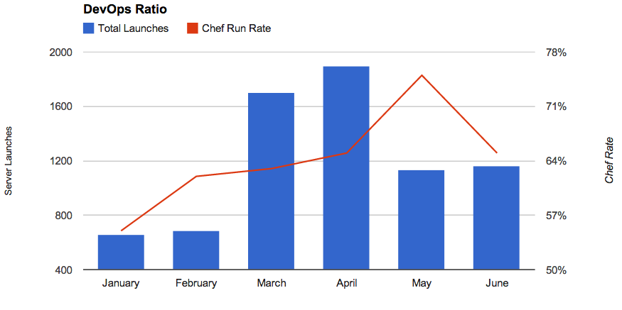
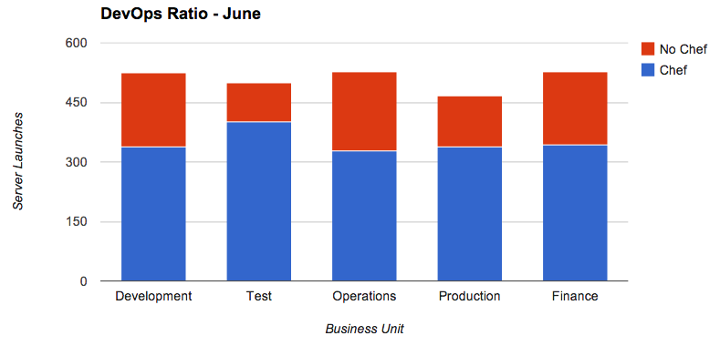

Measuring DevOps Adoption
Tue 01 July 2014 by GregSo your business is adopting cloud, implementing cloud-centric software development life cycles, and maybe even using configuration management software like Puppet or Chef.
How's that working out?
How would you even know if it was working out?
There's a dearth of business metrics around cloud adoption, and establishing a mechanism for measuring the success of transformational cloud initiatives might feel like trying to measure an intangible, but there are ways to gain insight.
In this post, we'll establish a metric for measuring the progress of some popular cloud adoption strategies. In this case, we'll find a way to measure the 'uptake' of Chef usage for server configuration.
Let's define a term to help gain clarity on what it means to measure the progress of some popular cloud initiatives.
DevOps Ratio
The ratio of servers launched having an associated configuration management routine compared to the total number of server launches.
This number might be important to business units seeking to drive the adoption of configuration management technologies. Incorporating configuration management into server creation events is beneficial for several reasons.
Idempotency
No, that term should not have you reaching for your bottle of little blue pills just in case romance happens. Idempotency has to do with the ability to apply an operation to a resource, like a server, an arbitrary number of times and have the same result
Put simply, idempotency translates to repeatable, reliable outcomes, and that's what configuration management delivers.
Transparency
Using configuration management allows for transparency of operations. The processes used by these technologies for server configuration is open to examination, validation, and certification in a way that individual servers are not.
It's much easier to spot (and fix) a flaw in a configuration process than it is to examine a large number of servers and find the problem. Configuration management technologies allow a team to configure once, apply to many. Enabling programmatic configuration across thousands of nodes is a force multiplier.
What's a good DevOps Ratio?
There are likely more than a few ways to measure the rate of adoption of configuration management technology. For now, let's assume we're measuring 'uptake', that is, how often is configuration management being used.
Time

DevOps Ratio - Time Ordered
One way to examine the uptake is to examine the rate of change for configuration management usage versus time.
Over time, look for an increasing rate of server launches leveraging configuration management.
Business Unit

DevOps Ratio - Business Unit
Another way to measure uptake might be to examine the server launch configuration management rate by business unit. For example, it might be appropriate to target development and test teams for early adoption of such a transformational technology.
A higher use rate among development teams than in the finance group might be entirely appropriate until the processes can be solidified for broader adoption.
In either case, the principle is the same, measure the relative usage rate for server launches leveraging configuration management.
Summary
Driving adoption of cloudy server creation methodologies is a good idea in general, but measuring the 'uptake' of the initiative is as important as the initiative itself.
Gaining insight into adoption rate will enable leaders to learn what is working and what isn't, and adjust the adoption strategy accordingly.
So, how's the whole configuration management thing going?